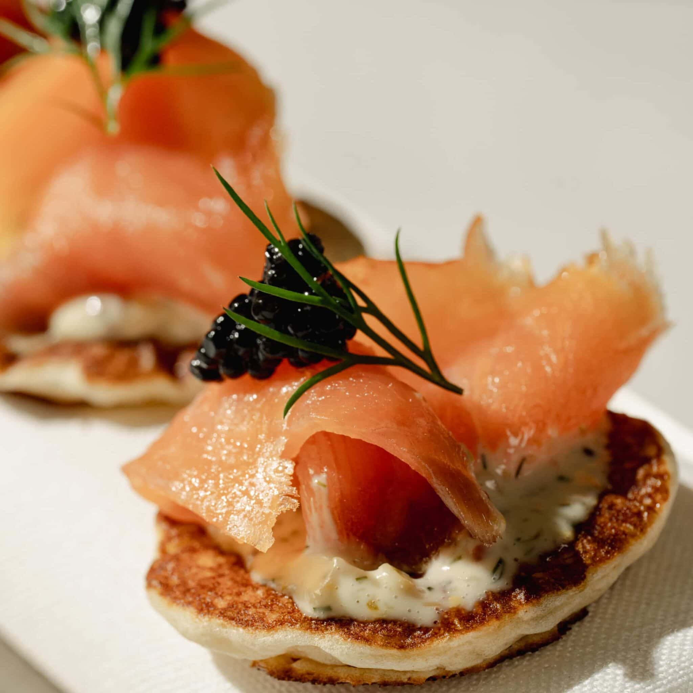
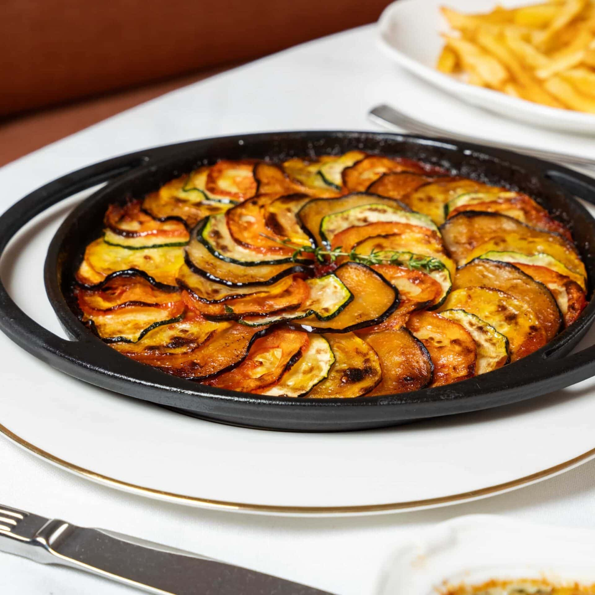
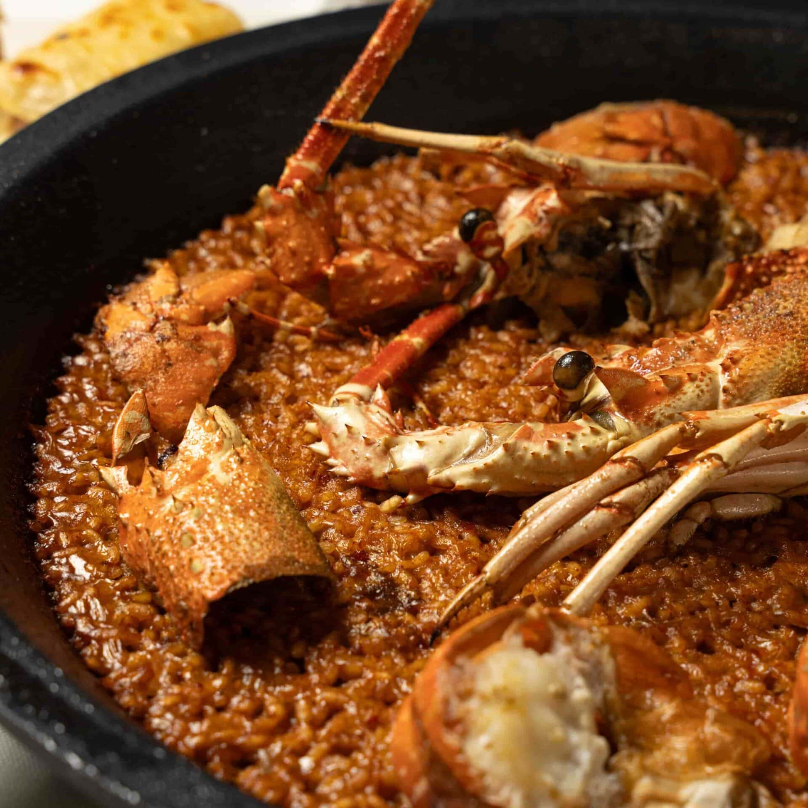
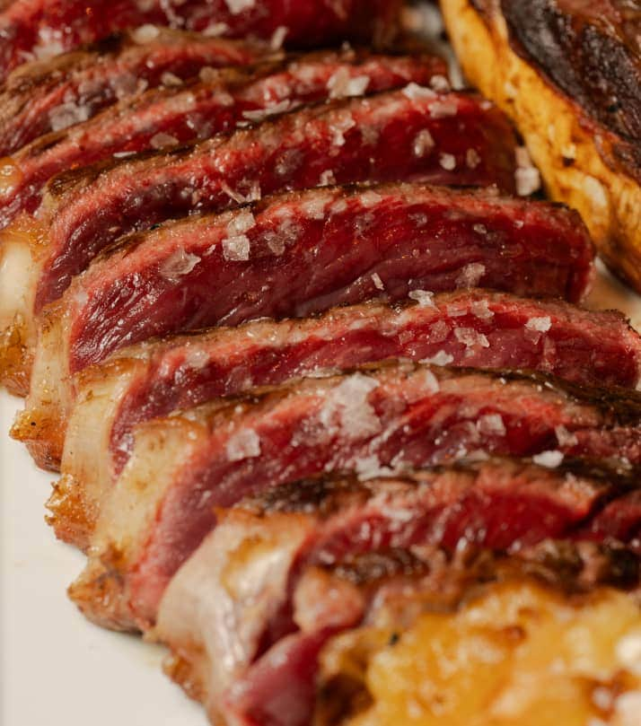
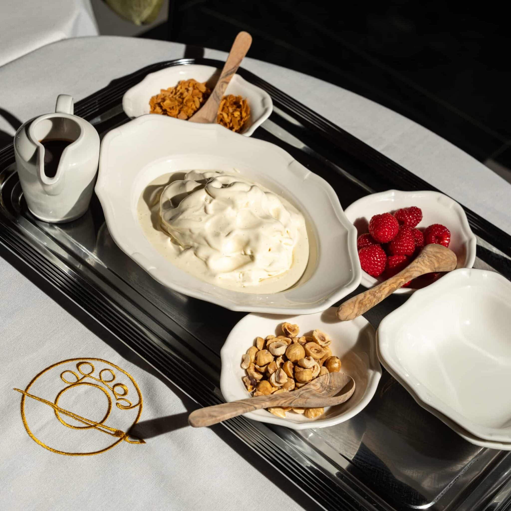
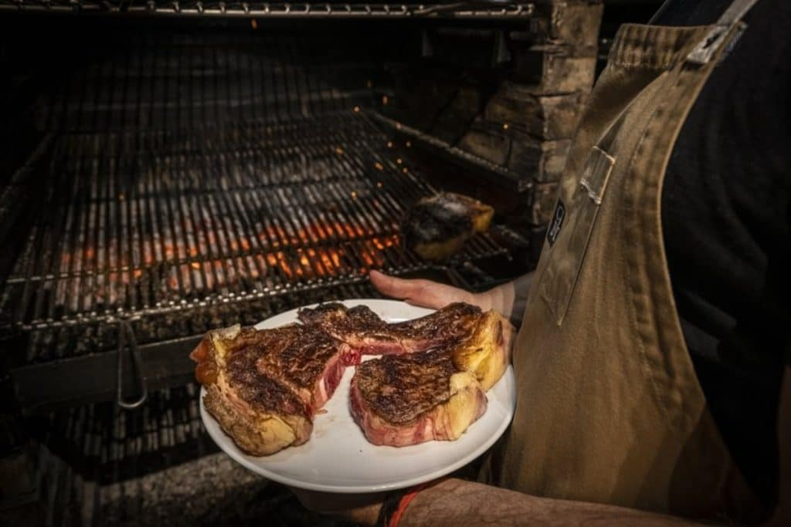

French oyster seasoned with sour and spicy condiment (unit)
Homemade blini, smoked salmon and caviar (unit)
Toasted brioche, anchovies from Santoña and homemade whipped butter
Crispy toast with tuna, spicy mayonnaise and candied egg yolk threads

Wood-fired vegetable ratatouille
Grilled artichokes with extra virgin olive oil
Crispy courgette flowers filled with mozzarella and parmesan
Grilled leek, cured cheese and romesco sauce

Wood-fired mediterranean lobster rice (recommended for 2 people)
Stewed caviar lentils with curry and catalan sausage
Macaroni with stewed tomato and spicy chorizo from León
Gratinated cannelloni with minced meat and iberian ham
Mushroom and truffle risotto

Grilled mini-burger of aged picanha (unit)
Roasted duck magret and mango chutney
Wood-fired roasted milk-fed veal shank
Se vende a pesoClassic freshly-made steak tartare
Milk-fed veal Wiener Schnitzel escalope
Grilled sirloin steak and Stroganoff sauce
Grilled matured beef ribeye with bone

Very creamy cheesecake
Strawberry tart with whipped cream
Lemon soufflé tart
Our Sacher cake
Hazelnut praline tart
Freshly churned bourbon vanilla ice cream
Para 2 personas · 18,00 € / Para 4 personas · 36,00 €
| Menú | Precio |
|---|---|
| Menú Clásico | 45 € |
| Menú Degustación | 65 € |
| Experiencia AURA | 90 € |